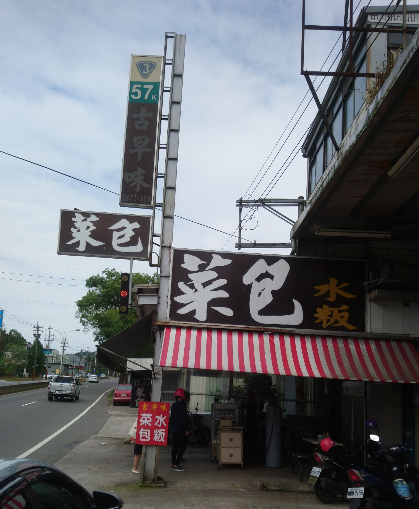
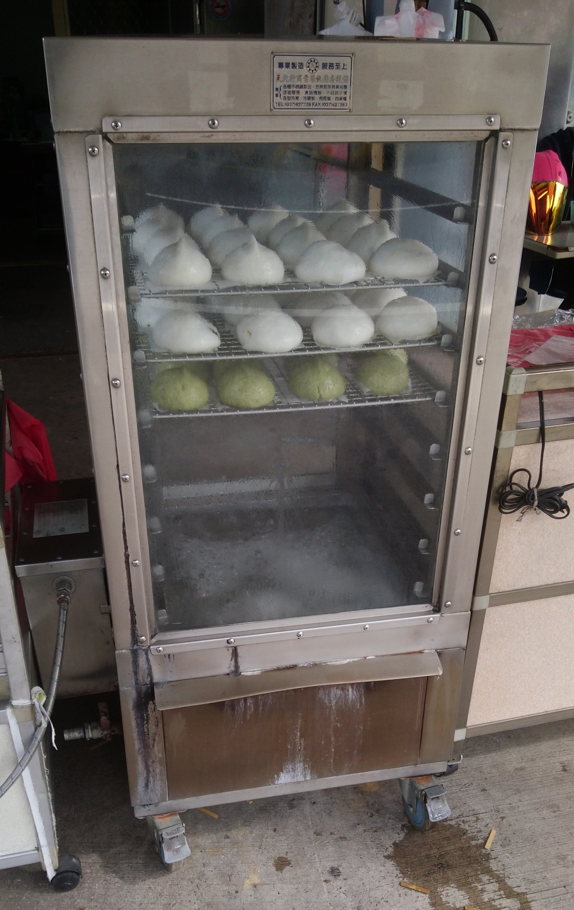
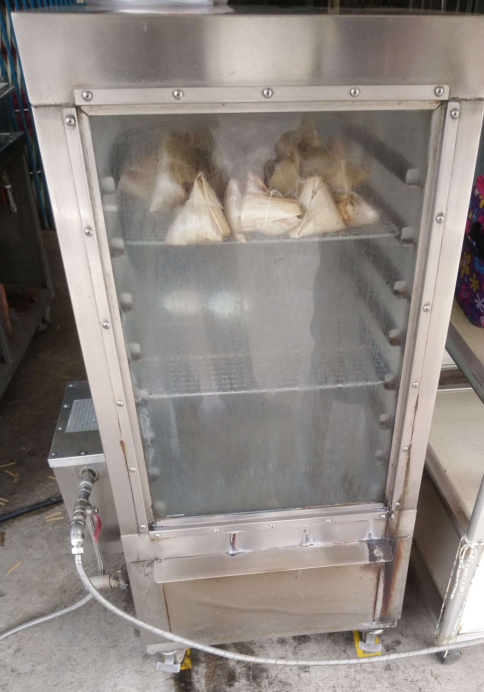

[關西] 57k古早味菜包
今天在關西吃午餐，離開餐廳時，經過關西習慣買的客家菜包 已經關門了，老婆另外查了一間開到下午5點的菜包店，口碑還不錯， 就來試試。
店名是 57k古早味菜包，位於台三線57公里處，差不多是關西往龍潭的路上。 剛好隔壁的店假日休息，很好停車。 
這是右邊的蒸籠，正在蒸菜包，看起來是多次少量地蒸菜包， 讓客人都能吃到剛蒸好的菜包，很不錯。 不過科技的進步，讓各個店家紛紛改用不鏽鋼蒸籠了，這家 也不例外。雖然竹蒸籠讓水蒸氣能立刻透出去，食物不至於被水滴淋到， 會比較好吃，可是竹蒸籠需要清洗、晾乾，一兩年就壞一個， 已經很少有人要花力氣用竹蒸籠了。 
這是左邊的蒸籠，已經賣得差不多了。所以我們只剩下等右邊的艾草包， 這一等，不得了，客人慢慢累積，過了5分鐘，已經累積七、八組客人了， 這時候，右邊蒸籠蒸好了，老闆打開蒸籠門，用大紙板搧風，把水蒸氣吹走， 我們趕快補齊艾草包，趕快走。 
到車上，先吃一口肉粽，鹹度還不錯，餡料只有一塊肉，整體還OK。

回家再吃個客家菜包，內餡是蘿蔔絲，也不錯。看來，下次如果是下午經過 關西，可以來這裡買菜包了。